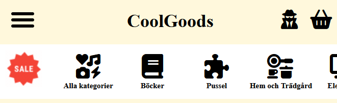
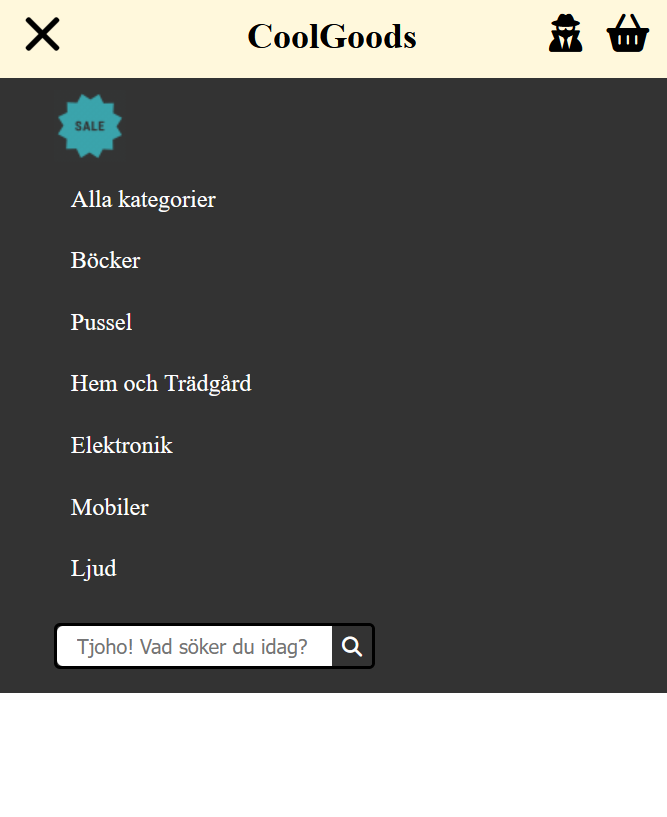
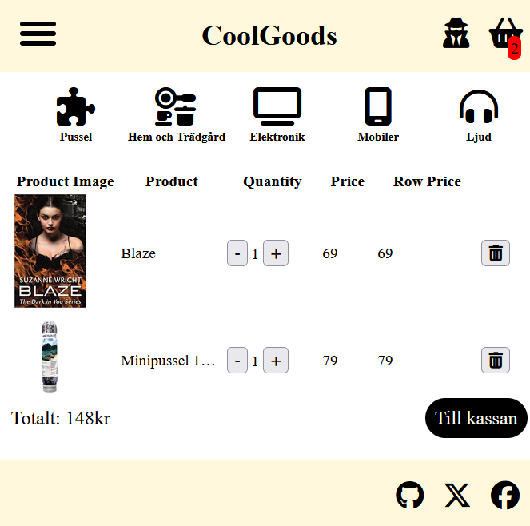

Webbutvecklare | Kreativ problemlösare | Teamplayer
Jag heter Rebecca Bengtsson och studerar Webbutveckling med inrikting mot e-handel på Medieinstitutet.
Tidigare arbetade jag på Xerox Sverige AB där jag ansvarade för produktion, leveranssäkerhet och processutveckling inom verksamheten.
Efter många år i en strukturerad och tekniskt orienterad miljö valde jag att byta bana till den digital utveckling.
Idag fokuserar jag på att bygga användarvänliga, responsiva webbplatser och e-handelslösningar - där struktur, kvalitet och kundupplevelse står i centrum.
Jag söker en LIA-plats under v. 4-18, 2026.
Jag gillar att skapa användarvänliga, snabba webbsidor och är särskilt intresserad av frontend och e-handelsplattformar. Här hittar du ett urval av mina kunskaper, utbildningar och projekt.
Skola: Medieinstitutet, 2024-2026
Skola: Cybergymnasiet Odenplan, 2007-2011
Period: 2012 - 2024
Erfarenheterna därifrån har gett mig en stark grund i struktur, ansvarstagande och problemlösning - något jag idag tar med mig in i mitt arbete som webbutvecklare.
Vill du veta mer om mig? Tveka inte att kontakta mig!
Maila mig på: Rebecca.Bengtsson@medieinstitutet.se
Eller besök mig på: LinkedIn
Telefon:073-633 43 13
Hitta mina projekt på: Github!
Några av de projekt som jag har jobbat på:
Hemsidan!
Menyn öppen!
Inne i varukorgen!
